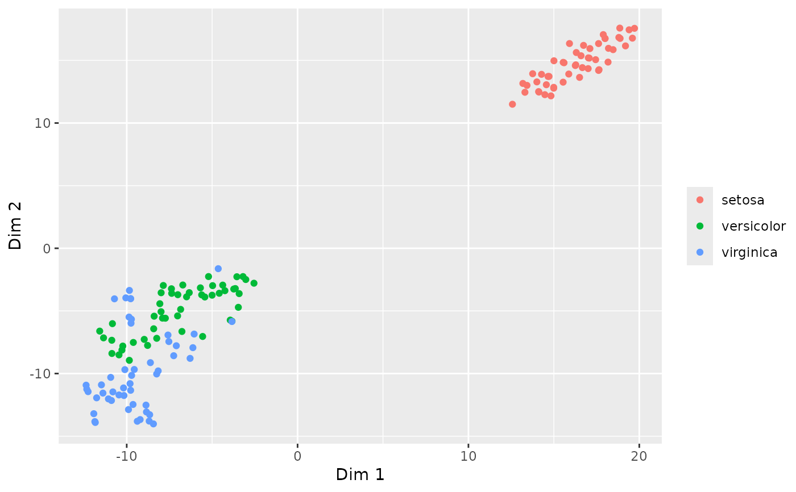
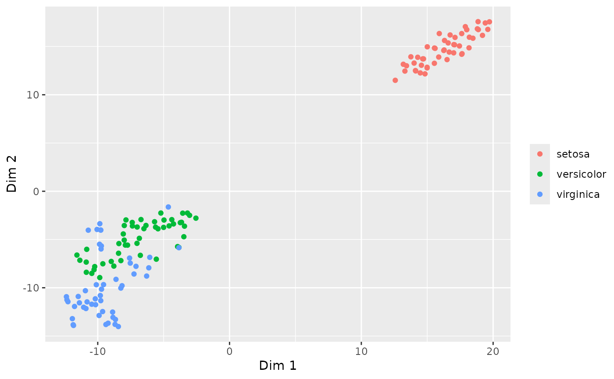
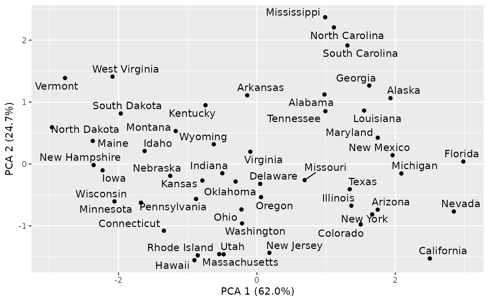
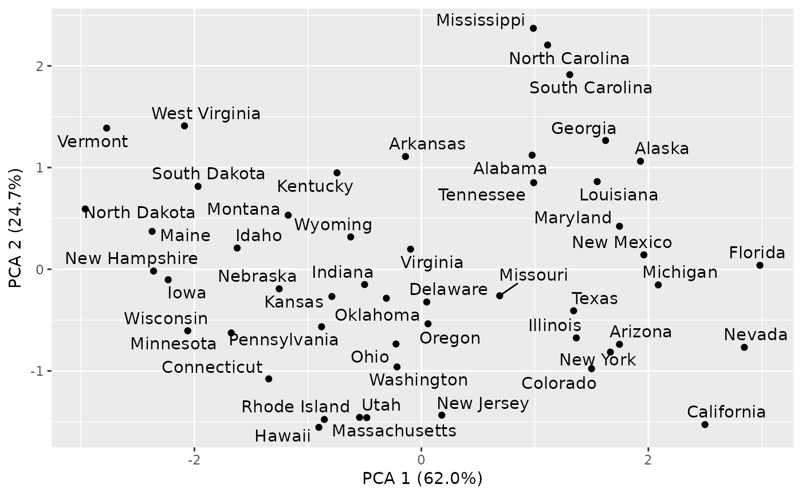
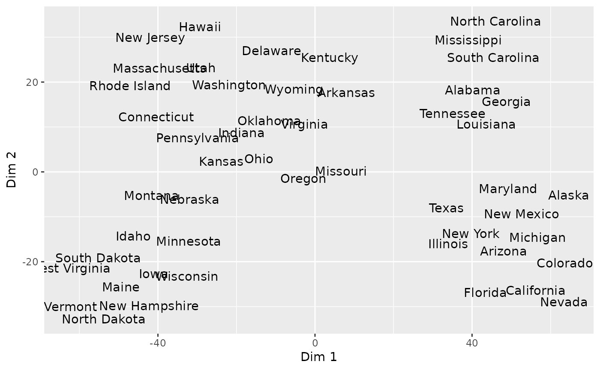
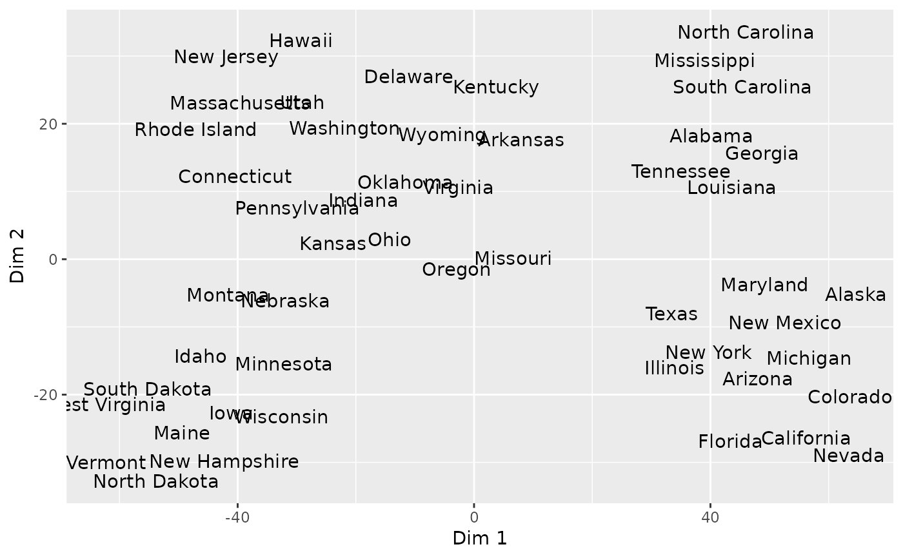

Make a PCA/tSNE/UMAP plot
pca_plot.RdThe function allows the passing of some parameters to Rtsne/umap:
Rtsne: perplexity
umap: nn (number of neighbors)
Usage
pca_plot(
X,
grp,
txt = FALSE,
method = c("pca", "tsne", "umap"),
dims = 2,
gg = TRUE,
ellipse = FALSE,
legend,
repel = FALSE,
plot = TRUE,
...
)Arguments
- X
A numeric matrix
- grp
Optional grouping factor to color instances by
- txt
Use rownames as labels instead of dots (default: false)
- method
How to carry out dimension reduction (pca/tsne/umap)
- dims
Dimensions to return (for tsne)
- gg
Use ggplot2? (default: true)
- ellipse
Draw mvn-ellipses around groups? (default: false, only available for ggplot)
- legend
Include a legend (default: true)
- repel
If
gg=TRUEandtxt=TRUE, useggrepel::geom_text_repel()? (default: false)- plot
Create plot? (default: true)
- ...
Further arguments to
plot()
Examples
# Plots of the iris data
pca_plot(iris[,1:4])
pca_plot(iris[,1:4], grp=iris[,5])
 pca_plot(iris[,1:4], grp=iris[,5], ellipse=TRUE)
pca_plot(iris[,1:4], grp=iris[,5], ellipse=TRUE)
 pca_plot(iris[,1:4], grp=iris[,5], method='tsne')

pca_plot(iris[,1:4], grp=iris[,5], method='umap')
pca_plot(iris[,1:4], grp=iris[,5], method='tsne')

pca_plot(iris[,1:4], grp=iris[,5], method='umap')
 # What pca_plot returns if plot=FALSE
head(pca_plot(iris[,1:4], method='pca', plot=FALSE))
#> PC1 PC2 PC3 PC4
#> 1 -2.257141 0.4784238 -0.12727962 -0.024087508
#> 2 -2.074013 -0.6718827 -0.23382552 -0.102662845
#> 3 -2.356335 -0.3407664 0.04405390 -0.028282305
#> 4 -2.291707 -0.5953999 0.09098530 0.065735340
#> 5 -2.381863 0.6446757 0.01568565 0.035802870
#> 6 -2.068701 1.4842053 0.02687825 -0.006586116
head(pca_plot(iris[,1:4], method='tsne', dims=3, plot=FALSE))
#> D1 D2 D3
#> 1 14.81675 -5.620704 22.30102
#> 2 12.14287 -3.562962 18.30364
#> 3 13.78713 -4.382672 18.98358
#> 4 12.88333 -4.854907 18.23502
#> 5 16.07073 -5.663654 22.38906
#> 6 17.39607 -5.150726 24.65361
head(pca_plot(iris[,1:4], method='umap', dims=3, plot=FALSE))
#> D1 D2 D3
#> 1 12.79487 -0.9650911 -1.71246066
#> 2 11.56405 -1.7851902 -0.27578632
#> 3 12.08099 -1.9893661 0.10532305
#> 4 11.82020 -1.8694437 -0.04011564
#> 5 12.87413 -1.2837349 -1.68737759
#> 6 13.22625 -0.9911514 -2.75013840
# Plots of the USArrests data
pca_plot(USArrests, txt=TRUE)
# What pca_plot returns if plot=FALSE
head(pca_plot(iris[,1:4], method='pca', plot=FALSE))
#> PC1 PC2 PC3 PC4
#> 1 -2.257141 0.4784238 -0.12727962 -0.024087508
#> 2 -2.074013 -0.6718827 -0.23382552 -0.102662845
#> 3 -2.356335 -0.3407664 0.04405390 -0.028282305
#> 4 -2.291707 -0.5953999 0.09098530 0.065735340
#> 5 -2.381863 0.6446757 0.01568565 0.035802870
#> 6 -2.068701 1.4842053 0.02687825 -0.006586116
head(pca_plot(iris[,1:4], method='tsne', dims=3, plot=FALSE))
#> D1 D2 D3
#> 1 14.81675 -5.620704 22.30102
#> 2 12.14287 -3.562962 18.30364
#> 3 13.78713 -4.382672 18.98358
#> 4 12.88333 -4.854907 18.23502
#> 5 16.07073 -5.663654 22.38906
#> 6 17.39607 -5.150726 24.65361
head(pca_plot(iris[,1:4], method='umap', dims=3, plot=FALSE))
#> D1 D2 D3
#> 1 12.79487 -0.9650911 -1.71246066
#> 2 11.56405 -1.7851902 -0.27578632
#> 3 12.08099 -1.9893661 0.10532305
#> 4 11.82020 -1.8694437 -0.04011564
#> 5 12.87413 -1.2837349 -1.68737759
#> 6 13.22625 -0.9911514 -2.75013840
# Plots of the USArrests data
pca_plot(USArrests, txt=TRUE)
 pca_plot(USArrests, txt=TRUE, repel=TRUE)

pca_plot(USArrests, txt=TRUE, grp=rep(LETTERS[1:5], each=10))
pca_plot(USArrests, txt=TRUE, repel=TRUE)

pca_plot(USArrests, txt=TRUE, grp=rep(LETTERS[1:5], each=10))
 pca_plot(USArrests, txt=TRUE, method='tsne', perplexity=10)

pca_plot(USArrests, txt=TRUE, method='umap', nn=6)
pca_plot(USArrests, txt=TRUE, method='tsne', perplexity=10)

pca_plot(USArrests, txt=TRUE, method='umap', nn=6)